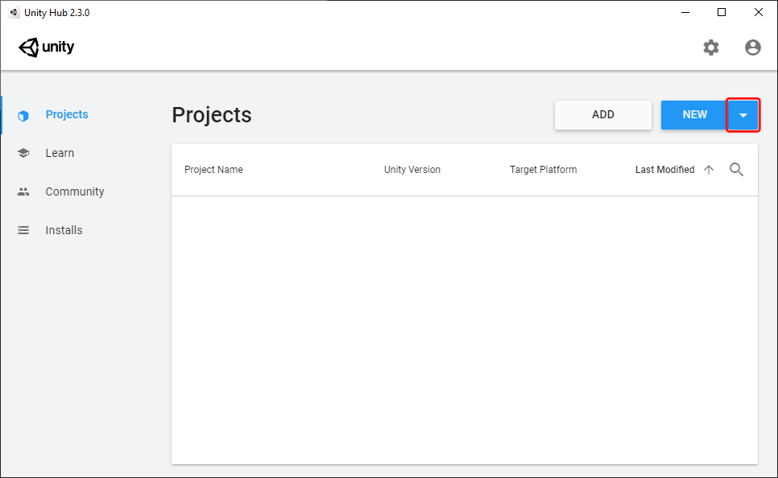
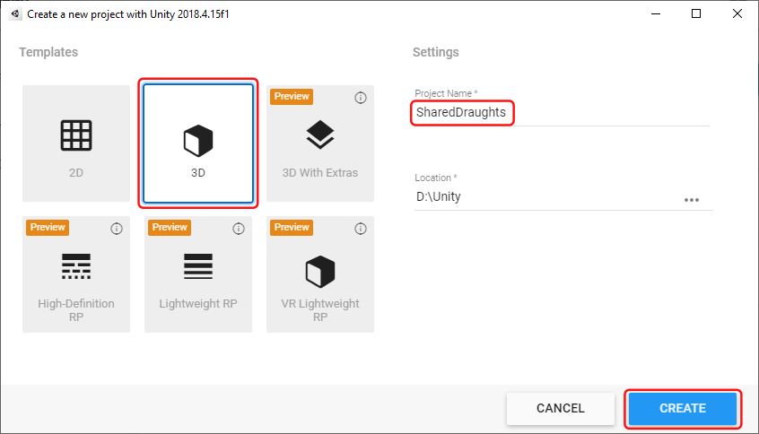
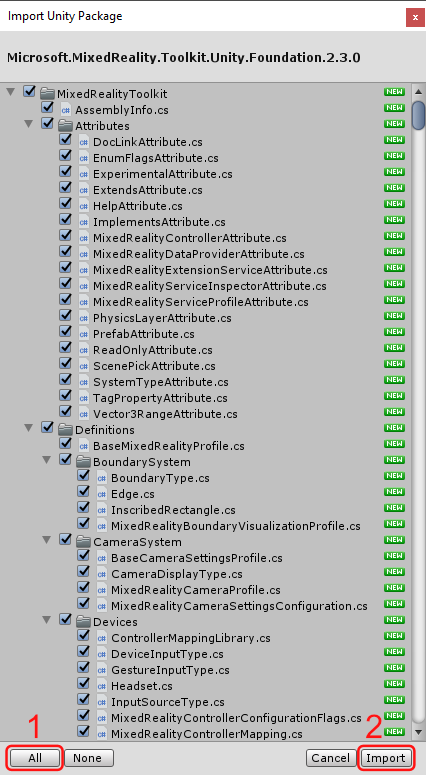

Collaboration & Sharing
Collaboration in a Shared Virtual Environment
Synchronous collaboration in Mixed Reality is possible in a shared virtual environment. This means that the shown 3D objects are synchronised between the participants and changes are broadcast in real-time. As an example, if one participant picks up an object and moves it around, the other members of the shared environment should be able to perceive the motion of the object acurately and with a low latency. As simple as this sounds, there are a few considerations that need to be made in order to successfully realise such a system.
Common Challenges of Networking
A series of common challenges can occur in the implementation of a shared environment.
- Network traffic:
- Unreliable connection:
- Broadcast of Changes:
- Session & User management:
- Permissions:
- Conflict handling:
- Movement smoothing: To save network traffic, the position of an object is not broadcast every single frame but in larger intervals. If the receiving client just updates the position of the object to the values given in the latest package, the user will see the object teleport along the path instead of a smooth movement. To solve this, the implementation should interpolate between the received positions. There is a trade-off between the smoothness and the latency. If a package is received, this means that the object should be at the received position. But with a naive interpolation between the last position and the most-recently received position, the object can only start moving towards this position now. This means that the object is always one package behind. A more advanced solution is to also broadcast the velocity vector of the object. With the direction and speed that the object is currently moving, the receiving client can anticipate the next position by extrapolating the object’s position along this trajectory. When the next package arrives, the position is corrected.
With poor connection, networked applications can show a series of common effects. Developers need to be aware of them and know how they are produced.
- Teleporting:
- Rubber-banding: With the described interpolation method which also works with the velocity vector of the object, an effect can occur called “rubber-banding”. It means that objects do not immediately react to large accelerations or decelerations but instead keep moving, before bounding back to their true position. We will look at this effect in a 1D example: There is an object which can only move left or right. It is moved on sender S and there is a receiver R. We assume one-way communication where the sender tells R about the updated positions. We will ignore the connection architecture and any network delay. This means that we can simply assume that an object which is sent at time point t by the sender is also received by the receiver at point t. At time point 0, a package is sent. It describes that the object is currently at position 0 and has a speed of 5. The package is received by r. It places the object at position 0 and starts moving it so that it will be at position 5 at time step 1. At time step one, S tells R that the object has actually moved to position 5 and still has a velocity of 5. R now gradually moves the object from position 5 to position 5 + 6 = 11 in a way that it will arrive at 11 at time point 2. At time step 2.5, the object comes to an abrupt halt on S at position 8. However, this is not immediately told R because packages are only sent at full time steps. So, at time step 3, S sends that the object is at position 8 with a speed of 0. But R has already moved the object to position 11 and now has to move it back to 8 in the next time interval. To the user which views the object on R this seems like a rubber-band effect since the object overshoots the target position before being pulled back to the point where it came to a halt.
Unity Networking Libraries
Photon
- General Introduction
- Presentation of Sharing Possibilities
Mirror
- General Introduction
- Presentation of Sharing Possibilities
Example Application: VIAProMa
- Reference of agile project management (there is the entire)
- Highlight of
- Owner manager
- When to use RPCs
Exercise: Creating a Shared Application in Photon
In this exercise, we will create the game Draughts (also known as Checkers). This sample app will provide a way for two remote users to move playing stones on a board so that both participants can see each other’s moves. We will not implement the rules of the game in this exercise. Instead, the app provides the shared pieces and relies on players to move them according to the rules. If you want, you can implement rules, e.g. move restrictions once you completed the exercise.
This exercise is split into three sections. The first part will show the setup of a shared environmnent for remote players. It will demonstrate how to set up a room system where content is only shared between users in one room and where multiple rooms can exist in parallel. In the second part, we will look at a basic way of implementing the shared logic using serialisers. The last part presents an alternative way for sending data over the network using Remote Procedure Calls (RPCs).
Setting up the Project
-
Create a new Unity project with the name “SharedDraughts” which uses the default 3D template. In this exercise, we are using Unity 2018.3 because it is the current long-term support version that is compatible with the Mixed Reality Toolkit. If you are using the Unity Hub, you can select which Unity version should create the project by clicking on the down arrow on the New button.
 
-
Download the Mixed Reality Toolkit. Go to the releases of the Mixed Realtiy Toolkit on GitHub and scroll to the latest version which is not marked as a pre-release. We are using the release Microsoft Mixed Reality Toolkit v2.3.0. In the Assets section of the release, download the Unity-package which has Foundation in its name as this is the base package. In our case, it is called * Microsoft.MixedReality.Toolkit.Unity.Foundation.2.3.0.unitypackage*.

-
Import the Mixed Reality Toolkit. To do this, perform a right-click in Unity’s Asset Browser and select Import Package > Custom Package from the context menu.
 After that select the Unity-package that you just downloaded in the opened file explorer and click Open.
Unity will prepare the Unity-package for the import.
Next, a dialog will be shown which allows you select which content should be imported.
Click All to make sure that everythin is selected and then press Import.
After that select the Unity-package that you just downloaded in the opened file explorer and click Open.
Unity will prepare the Unity-package for the import.
Next, a dialog will be shown which allows you select which content should be imported.
Click All to make sure that everythin is selected and then press Import. Once the import has finished, you will find the new folders of the Mixed Reality Toolkit in your assets.
Synchronising Data with Serialisers
Synchronising Data with Remote Procedure Calls
Section two presents an alternative way of synchronizing the play stones. Both
World Anchors
- Concept of Spatial Anchors
Azure Spatial Anchors
ARCore World Anchors
Cross-Platform Support
Mixed Reality Toolkit
- Setting up the Mixed Reality Toolkit for cross-platform support